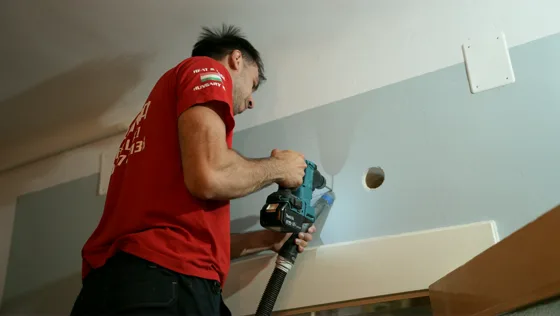
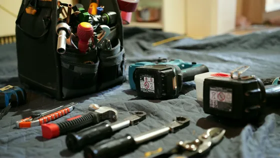
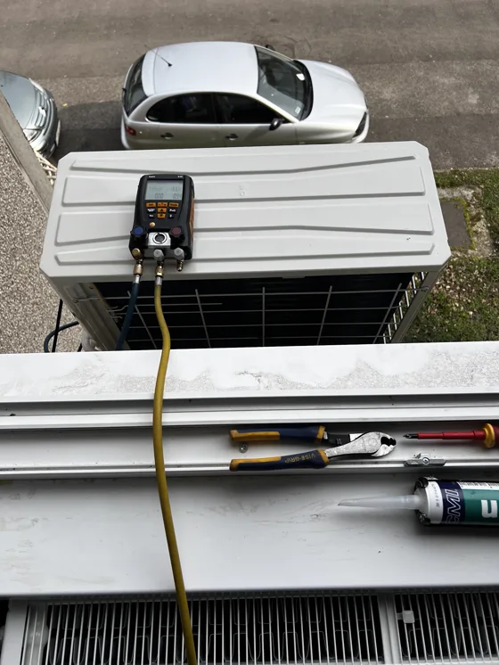
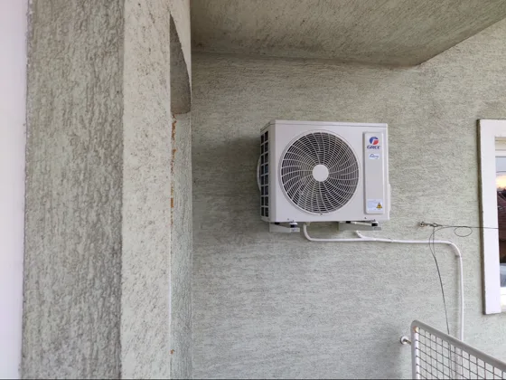
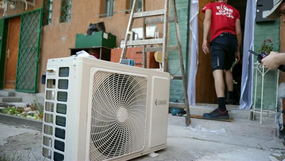
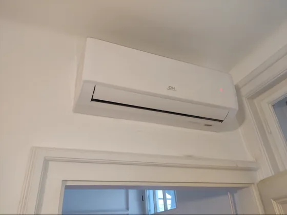

Saját munkáink, ahogy készültek. Nem katalógusfotó.






Lehet-e panelbe klímát szerelni, hol fut a vasalat a falban, mit kér a ház.
Mit mond a törvény, mit a közös képviselő.
Miért a legrosszabb ötlet a hőségriadó napján telefonálni.
Ingyenes kiszállás, három év garancia.